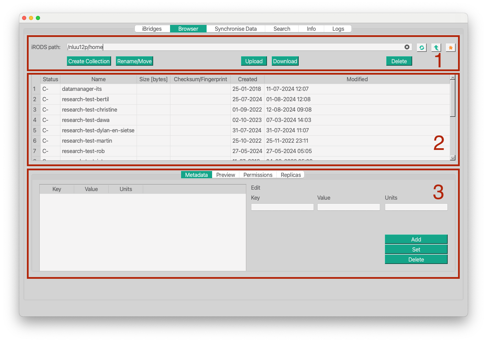

iBridges User Documentation
Synopsis
iBridges is a GUI to a Data management platform based on iRODS. It exposes iRODS functionality through the graphical interface to the users. We divided the different functions into groups where each function group is represented in an own view in the GUI.
The views which currently are in use:
- The Browser is a tool to browse through iRODS collections and inspect data objects and collections. You can also edit metadata and permissions; and you can delete data in this view.
- The Data Synchronisation exposes functionality to synchronise local directories with their counterpart collections in iRODS.
- The Search to search for data collections and objects.
- The Info tab summarises information e.g. the user’s role and groups; and storage resources on the iRODS server, their status and their available capacity.
Browsing through your iRODS collections
When you successfully logged into iRODS the first view you will see is the Browser. this view has three sections:
- The navigation section
- The listing section
- A section to inspect data objects and collections in more detail

Listing
The table below the navigation section shows a table which contains all collections and data objects in the collection in the navigation field.
- Status:
-Cfor collections or the status of the data object. If the status of a data object is notgood, the data is compromised. Please contact your iRODS administrator to investigate. You cannot use such data! - Name: The name of the data object or collection
- Size: The size in Bytes.
- Checksum: A hash calculated on data objects to verify them, the hash is unique for each data object if they contain the same data . This can be used to verify that data transfers from iRODS to your local were successful.
- Created and Modified: the timestamps for the creation and last editing of a collection or data object.
Single Click on a collection or data object will load its details into the section below.
Double Click on a collection to load its path into the navigation field above and navigate there.
Inspect collections and data objects
The last of the three sections gives more detail about the data. Single Click on a collection or a data object to load its details.
Previewlists the contents of a collection or the first lines of a text, json or csv file.Metadatashows the iRODS metadata of the selected item. iRODS metadata is structured as key, value and units.
Single click on a metadata item will load its information into the editable fields.
Create a new metadata entry by providing key, value and units in the respective fields and click
add. here can be several metadata entries with the same key but different values. Try it out!Set the metadata values and units and keys of all metadata items with the same key as in the
key fieldtovalueandunitsby clicking theSetbutton. I.e. you will delete all metadata entries with the key specified inkeyand replace them with the provided information in the three fields.Delete metadata: Load or type the metadata into the thre fields and click
Delete.
Permissionsshows the access rights and levels of the selected item. You can giveread,writeorown(includes the right to delete data and manipulate their permissions) access from the drop-down menuAccess name. To withdraw access we usenull.
The label
Ownerat the bottom of the page shows the user who created the selected data object or collection.Collections have a special permissions keyword
inheritandnoinherit. Setting the permissions of a collections toinheritwill transfer the collection’s permissions to all newly added members of the collection.To change the permissions of a collection and all its current members, set
Recursiveto True.Replicasshows the on which storage resource data objects are stored. It will be empty when the selected item is a collection. It shows the checksum of each replica and their status. The information is mainly meant for sysadmins. Simply send them this information when the status of a data object is different fromgood.
Delete: In the browser table click on the collection or data object you want to delete, frist clickDelete, this will load a preview of the subcollections and data objects in the collection and thenConfirm. Note, the data will be completely removed from iRODS!
Data Synchronisation
Synchronise Data provides the tools tyo synchronise a local folder with an iRODS collection. The synchronisation can work both ways, from local to iRODS (right-pointing arrow button) and from iRODS to local (left-pointing arrow button). Before the synchronisation the difference will be calculated and shown in the textfield on the bottom. Note, the calculation of differences can take some time.

Beta release
Note, the synchronisation only works for collection or directories, not for single files or data objects.
Beta release: upload large data
The Upload and Download in the Browser view is not meant for large scale uploads. Please use the synchronisation for that.
If you want to upload a large directory to iRODS, create the destination collection with the Create Collection button and then synchronise your data from Local to iRODS.
In the case you want to download a large collection from iRODS, create the destination directory on the local file system with the Create Folder button and synchronise the data from iRODS to Local.
Search
Search provides a mask in which you can type in path information and iRODS metadata information. Click the Search button. If there are data objects or collections with these specifications they will be listed. A successful search will also open two more buttons: Clear to clear the search results and Download.
Search fields
The path at the top of the page shows the collection in which you are going to search. The collection needs to exist and by default your home collection will be used.
In the field next to Obj/Coll name you can specify which data objects or sub collections you are looking for. E.g. if you fill in demo the search will look for all collections and data objects called demo.
In the example above we are looking for all .txt data objects in a collection called my_books denoted by my_books/%.txt.
In the metadata mask we narrow the search results down to all .txt data objects which are labeled with the metadata key author and the metadata value containing the substring Doyle denoted by %Doyle%.
Note that the wild card is %!
Search results
Single click on items or use the Select all checkbox and click the Download button to open a dialog to select the destination for the data and start the download.
Double click on an item in the list to set the Browser to its location to further inspect the metadata, permissions etc.